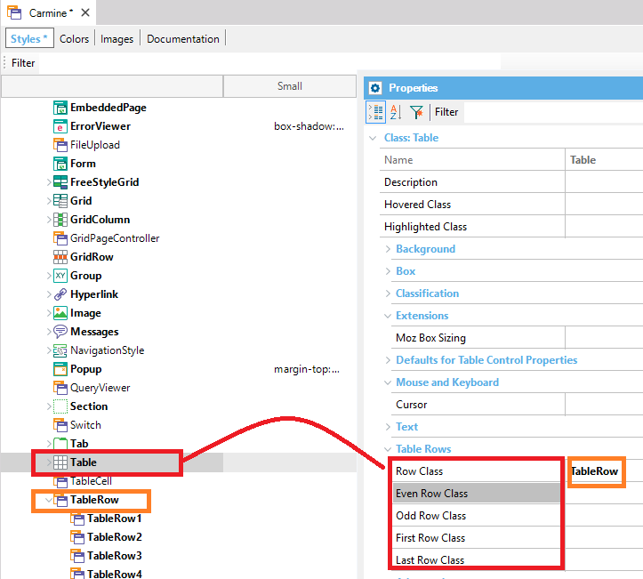
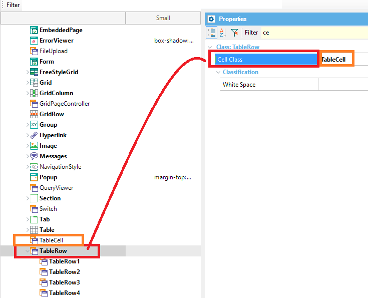

The Table control and Responsive Table Rows settings (Even Rows, Odd Rows, First Row, Last Row), as well as Cell properties, can be easily configured using the Theme. The TableRow and the TableCell Theme classes are introduced for that purpose. How to configure the Row settings of a tableThis can be done using the following Table Theme Class properties under the "Table Rows" section:
Any of these properties can be associated with a TableRow class (or a descendant of it) where you can configure the Rows style as you want.  In order to set the cell style of a row, use the Cell Class property of the TableRow Class. There you can assign the TableCell property (or one of its descendants).
 NoteThe Row Class property is also available at the control level, so you can also configure a TableRow class for that row in the table itself.
|